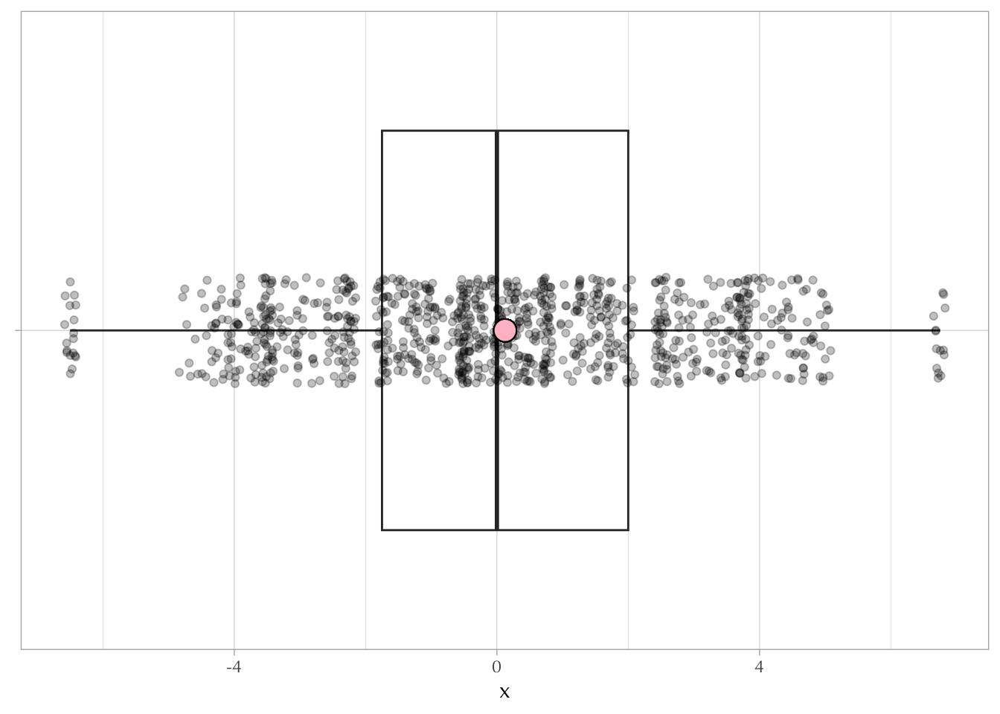
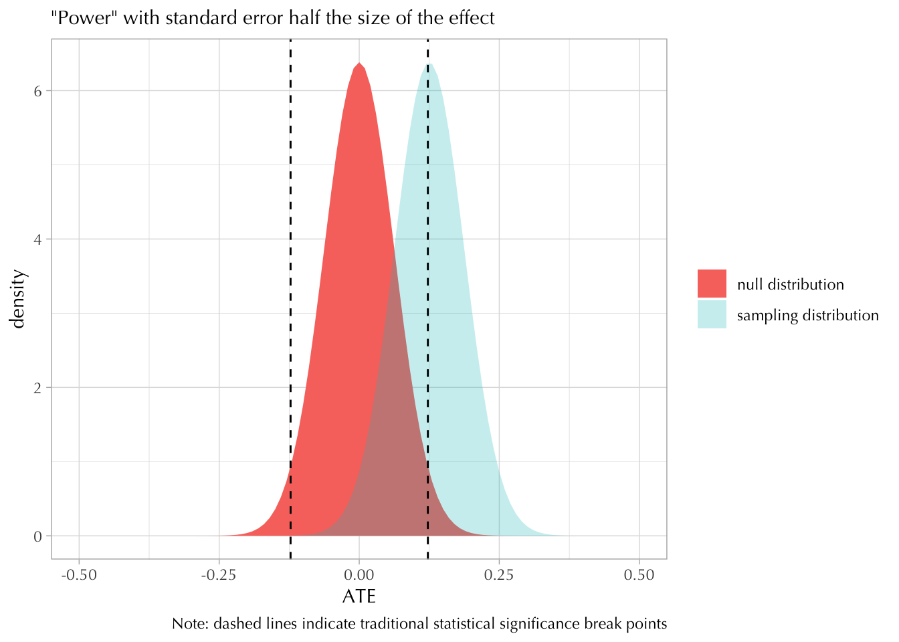
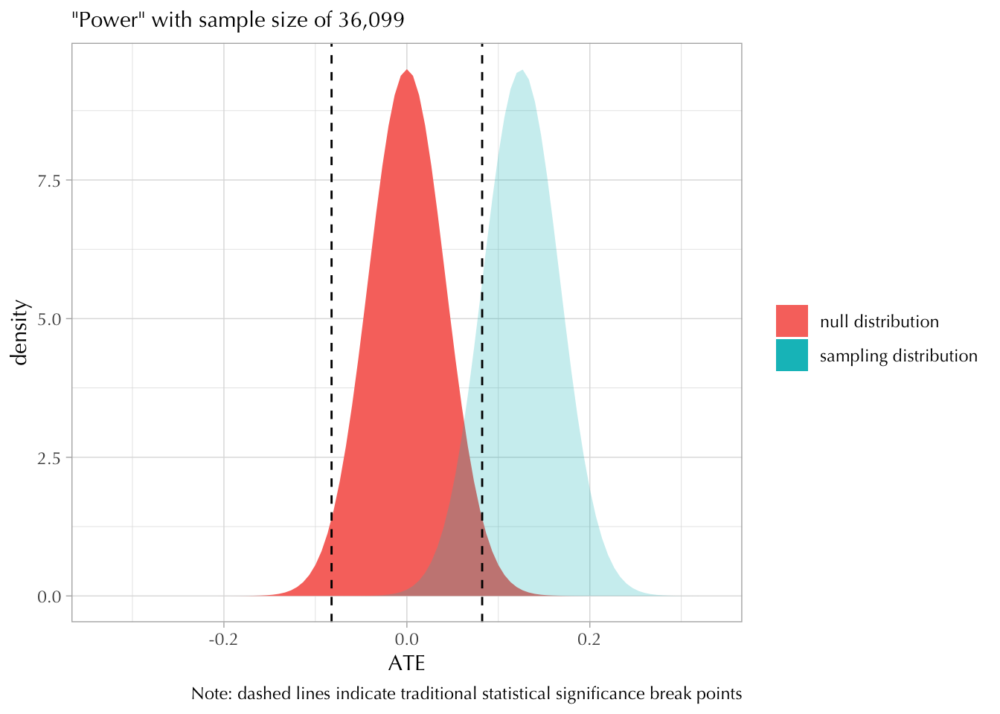

Packages
library(tidyverse)
theme_set(theme_light(base_family = "Optima"))library(tidyverse)
theme_set(theme_light(base_family = "Optima"))The following data frame contains the potential outcomes for 8 individuals.
d <- data.frame(
T = c(0, 0, 1, 0, 0, 1, 1, 1),
Y0 = c(5, 8, 5, 12, 4, 8, 4, 9),
Y1 = c(5, 10, 3, 13, 2, 9, 1, 13),
id = LETTERS[1:8]
)
d T Y0 Y1 id
1 0 5 5 A
2 0 8 10 B
3 1 5 3 C
4 0 12 13 D
5 0 4 2 E
6 1 8 9 F
7 1 4 1 G
8 1 9 13 HThe variable T depicts whether someone got the “treatment” or not.
Create a new variable called Y that contains the observed outcomes.
d <- d |>
mutate(Y = ifelse(as.logical(T), Y1, Y0))
d T Y0 Y1 id Y
1 0 5 5 A 5
2 0 8 10 B 8
3 1 5 3 C 3
4 0 12 13 D 12
5 0 4 2 E 4
6 1 8 9 F 9
7 1 4 1 G 1
8 1 9 13 H 13What is the Average Treatment Effect (ATE) for this 8 person experiment?
## ate --- based on "complete" data
d |>
mutate(TE = Y1 - Y0) |>
summarize(ATE = mean(TE)) ATE
1 0.125## ate --- "naive" estimate based on observed data
mean(d$Y[d$T == 1]) - mean(d$Y[d$T == 0])[1] -0.75Simulate a new completely randomized experiment on these 8 people; that is, re sample \(T\) at random so that equal numbers get the treatment and the control.
d$T <- sample(d$T)Create a new variable called Y that contains the observed outcomes.
d <- d |>
mutate(Y = ifelse(as.logical(T), Y1, Y0))What is the Average Treatment Effect (ATE) for this 8 person experiment?
## naive estimate
mean(d$Y[d$T == 1]) - mean(d$Y[d$T == 0])[1] -2.5Do this a couple of times (at least 3) and note the differences.
I will do this a couple of hundred times.
out <- replicate(1e3, {
d$T <- sample(d$T)
d$Y <- ifelse(as.logical(d$T), d$Y1, d$Y0)
mean(d$Y[d$T == 1]) - mean(d$Y[d$T == 0])
})
summary(out) Min. 1st Qu. Median Mean 3rd Qu. Max.
-6.50000 -1.75000 0.00000 0.04275 2.00000 6.75000 How do these estimates compare to the “real” ATE?
tibble(x = out) |>
ggplot(aes(x, y = "")) +
geom_boxplot() +
geom_jitter(height = 1/10, alpha = 1/4) +
geom_point(x = 0.125, fill = "pink", shape = 21, size = 5) +
labs(y = NULL)Warning in geom_point(x = 0.125, fill = "pink", shape = 21, size = 5): All aesthetics have length 1, but the data has 1000 rows.
ℹ Please consider using `annotate()` or provide this layer with data containing
a single row.
They are all over the place. But… on average they’re sort of close.
Obviously, an experiment of 8 people will not give you enough “statistical power.”
Assuming the ATE is \(0.125\), how many people would you need to enroll in this experiment to have enough statistical power?
Hint: There are a few different ways of giving a reasonable answer to this question. The wording of this problem is ambiguous.
To get at questions of statistical power we need to establish two things from the outset: (1) the “effect” we believe exists out there and (2) the desired standard error. For the latter, this usually means choosing a sample size so that the resulting standard error that will allow me to have a false negative rate of at most 20%. But this is just a convention.
Steve’s code already shows how to do this with the built-in t.test and power.t.test functions. He also had to make assumptions about the the distribution of the potential outcomes in the population. We all have to do this, except that sometimes we don’t realize it because the assumptions are hidden away in some kind of Internet sample size calculator.
This is how I would have done it.
Step 1. I will assume that the standard deviation for each potential outcome in the 8 person experiment is the same in the wider population. This is a big assumption, but it’s the one I’ll go with. This is the main difference between what Steve did and what I did (his assumptions about the population variance are hidden in lines 54-56).
sdY0 <- sd(d$Y0)
sdY0[1] 2.850439sdY1 <- sd(d$Y1)
sdY1[1] 4.869732Note. Think about what I just did. I assumed the heterogeneity in treatment effects among those who got the treatment is larger than it is for those who didn’t. Would this make sense in real life? Maybe?
Step 2. I will assume that half the sample gets a treatment and the other half does not. This allows me to calculate the standard error of the difference in means simply as:
\[ \text{SE} = \sqrt{\frac{\sigma_1^2}{n_1} + \frac{\sigma_2^2}{n_2}} = \sqrt{\frac{2(\sigma_1^2 + \sigma_2^2)}{n}} \]
Step 3. Choose a simple heuristic so that my standard error is good enough.
Note. You might be tempted to use the simple statistical significance heuristic, according to which you need a standard error that is half the size of the effect ( \(\text{SE} = 0.0625\) ). But this is wrong. If this was the case, then you would get a statistically significant ( \(\alpha = 0.05\) ) only half the time. Most people go for 80%
ggplot() +
xlim(-1/2, 1/2) +
stat_function(
fun = \(x) dnorm(x, 0, 0.0625),
geom = "area", aes(fill = "null distribution")
) +
stat_function(
fun = \(x) dnorm(x, 0.125, 0.0625),
geom = "area", aes(fill = "sampling distribution"), alpha = 1/4
) +
geom_vline(xintercept = qnorm(c(0.025, 0.975), 0, 0.0625), linetype = "dashed") +
labs(
y = "density", x = "ATE", fill = NULL,
caption = "Note: dashed lines indicate traditional statistical significance break points",
subtitle = "\"Power\" with standard error half the size of the effect"
)
So, I will use the simple heuristic that I want my standard error to be a third the size of my effect, so around 0.042.
## sample size with simple algebra
2*(sdY0^2 + sdY1^2) / 0.042^2 [1] 36098.96Based on this simple sketch, I anticipate that my sample size will have to be huge in order to detect such a small effect.
How does this look like?
ggplot() +
xlim(-1/3, 1/3) +
stat_function(
fun = \(x) dnorm(x, 0, 0.042),
geom = "area", aes(fill = "null distribution")
) +
stat_function(
fun = \(x) dnorm(x, 0.125, 0.042),
geom = "area", aes(fill = "sampling distribution"), alpha = 1/4
) +
geom_vline(xintercept = qnorm(c(0.025, 0.975), 0, 0.042), linetype = "dashed") +
labs(
y = "density", x = "ATE", fill = NULL,
caption = "Note: dashed lines indicate traditional statistical significance break points",
subtitle = str_glue("\"Power\" with sample size of 36,099")
)
To calculate the statistical power we simply calculate the area under the sampling distribution above the desired cutoff point.
cutoff <- qnorm(0.975, mean = 0, sd = 0.042) ## null distribution
pnorm(cutoff, mean = 0.125, sd = 0.042, lower.tail = FALSE)[1] 0.8452392If you want to get more exact numbers for the traditional 80% power (and this is just another fetishized number), we can use some algebra:
\[ \begin{align} 0 + 1.96 \cdot \text{SE} &= \overbrace{0.125}^\text{ATE} - 0.84 \cdot \text{SE} \\ \text{SE} &= 0.125 / 2.8 \\ &\approx 0.045 \end{align} \]
Which we can unpack to solve for the sample size:
\[ \begin{align} \sqrt{\frac{2(\sigma^1 + \sigma^2)}{n}} &= 0.045 \\ 2\times\frac{\sigma_1^2 + \sigma_2^2}{0.045^2} &= n \end{align} \]
Or you could use more complicated R functions… although I find this to be much easier than algebra.
stat_power <- function(n) {
## this function will use our assumptions about standard deviations
## in the population and output the statistical power that corresponds
## to a specific sample size
se <- sqrt(2*(sdY0^2 + sdY1^2) / n) ## population variance assumption
cutoff <- qnorm(0.975, mean = 0, sd = se) ## null distribution cutoff
pnorm(cutoff, mean = 0.125, sd = se, lower.tail = FALSE) ## stat power
}
sample_size <- function(power = 0.8, interval = c(300, 1e6)) {
## this function will find the value of "n" for which the output
## of stat_power(n) - "power" is zero
out <- uniroot(\(n) stat_power(n) - power, interval = interval)
out$root
}
sample_size(power = 0.8)[1] 31987.55ggplot() +
xlim(1e3, 50e3) +
geom_function(fun = stat_power) +
geom_hline(yintercept = 0.8, linetype = "dashed") +
geom_vline(xintercept = sample_size(power = 0.8), linetype = "dashed") +
labs(x = "Sample Size", y = "Statistical Power")